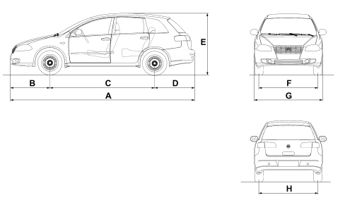

CAR SIZE
- Path
- Technical Data > DESIGN DESCRIPTIONS AND SPECIFICATIONS > CAR SIZE
- Kind
- technical data / specifications
- Applies to
- all engines; all production periods
- Interactive page
- https://sloeber94.github.io/elrnDB-fCrm/en/#/194000030
Applies to: all engines; all production periods
Dimensions are expressed in mm and refer to the vehicle equipped with its original tyres.
Height is measured with vehicle unladen.
1.8 | 2.2 | 1.9 Multijet 8v | 1.9 Multijet 16v | 2.4 Multijet 20v c.a. | |
|---|---|---|---|---|---|
A (mm) | 4756 | 4756 | 4756 | 4756 | 4756 |
B (mm) | 1021 | 1021 | 1021 | 1021 | 1021 |
C (mm) | 2700 | 2700 | 2700 | 2700 | 2700 |
D (mm) | 1035 | 1035 | 1035 | 1035 | 1035 |
E (mm) | 1597 (*) | 1597 (*) | 1597 (*) | 1597 (*) | 1597 (*) |
F (mm) | 1514 (**) | 1514 (**) | 1514 (**) | 1514 (**) | 1514 (**) |
G (mm) | 1775 | 1775 | 1775 | 1775 | 1775 |
H (mm) | 1495 (**) | 1495 (**) | 1495 (**) | 1495 (**) | 1495 (**) |
Luggage compartment capacity (V.D.A. standards): dm3 500
Luggage compartment volume (VDA standard) with back seat folded down: dm3 893
Maximum luggage compartment capacity (V.D.A. standards): dm3 1610
